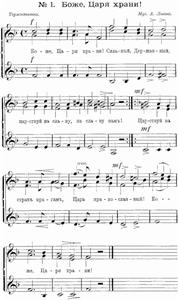

1626 全能全權之神 God the Omnipotent！
|
|
【全能全權之神】
詩集：頌主聖詩，514 |
|
God The Omnipotent 1 God the all-terrible! King, who ordainest
great winds thy clarions, lightnings thy sword,
show forth thy pity on high where thou reignest;
give to us peace in our time, O Lord.
2 God the omnipotent! Mighty avenger,
watching invisible, judging unheard,
save us in mercy, O save us from danger;
give to us peace in our time, O Lord.
3 God the all-merciful! Earth hath forsaken
thy ways of blessedness, slighted thy Word;
bid not thy wrath in its terrors awaken;
give to us peace in our time, O Lord.
4 God the all-righteous One! Man hath defied thee;
yet to eternity standeth thy Word;
falsehood and wrong shall not tarry beside thee;
give to us peace in our time, O Lord.
5 God the all-wise! By the fire of thy chast'ning,
earth shall to freedom and truth be restored;
through the thick darkness thy kingdom is hast'ning;
thou wilt give peace in thy time, O Lord.
Source: Trinity Psalter
Hymnal #556
|
全能全权之神
全能全权之神！大地至高君，雷声闪电，是祢号角剑影：
我们求主庄严宝座施怜悯，我们求主今日赐太平。
大慈大悲之神！举世负深恩，背道离经，主教训常看轻：
我们求主莫教圣怒震世尘，我们求主今日赐太平。
至圣公义之神！人类违主训，然主圣道历万世不变更；
罪恶虚伪在主治下难留存，我们求主今日赐太平。
大智大慧之神！经祢用火炼：真理自由重临世界救人；
冲破黑暗，光明天国速来临，依主所定，到时有太平。 |
|

|
|
|
http://www.hymncompanions.org/Nov/05/stream.php
全能全權之神
God the Omnipotent！
全能全權之神！權力貫乾坤；
電作寶刀，發雷霆，傳號令；
我眾求主，莊嚴寶座施憐憫，
我眾求主，今日賜太平。
大慈大悲之神！舉世負深恩，
背道離經，看不起，主教訓；
我眾求主，休教聖怒震塵瀛，
我眾求主，今日賜太平。
至聖至義之神，人類違主訓；
然主聖訓，歷萬世，永昭明，
罪惡虛偽，在主治下難圖存；
我眾求主，今日賜太平。
 (請點耳機收聽)
(請點耳機收聽)
這首詩歌是由兩首詩歌合成，但兩者成詩日期，前後相隔有廿八年之久。 前者是柯理（Henry F. Chorley,
1808-1872）所作，後者乃依萊敦（John Ellerton, 1826-1893）的作品，他們都是英國人。


Chorley, Henry Fothergill, 1808-1872
Ellerton, John, 1826-1893
本詩歌原名「天佑沙皇」（God Save the
Tsar），是帝俄時的國歌。作者是俄國人盧甫（Alexis F.
Lvov,1799-1870）。盧甫的父親自幼送他從名師學音樂，他是一位優秀的小提琴手，畢業於道路工程學院，官拜陸軍少將。
 L'vov, Aleksēi Federovich, 1798-1870
L'vov, Aleksēi Federovich, 1798-1870
1833年沙皇尼古拉斯一世命盧甫作一首歌，以「天佑沙皇」為首句。盧甫在一深夜完成此歌，當年十一月時，在宮廷教堂獻唱，有兩個樂隊伴奏。
沙皇聽後滿意，令軍政部以此為軍歌；他賜給盧甫一個鑲有鑽石的鼻煙盒，並頒令盧甫家族佩帶的綬章上加刻「天佑沙皇」四字。
柯理的父親是製鎖商，家人希望他也從商，但他覺得自己的真正興趣在音樂與文學，在他表兄弟們的鼓勵之下，他學習寫作。
1830年起，他開始以寫作為生，三年後任雜誌社編輯，他評介音樂和文藝作品達三十八年之久，並為許多歌劇作詞。
有人形容他的文章是雅緻而詼諧。他對孟德爾頌（Felix Mendelssohn）和史博（Ludwig Spohr）的作品頗為推崇，而對蕭邦（Frederic
Chopin）和華格納（Richard Wagner）等作品則嚴加評論。
他和名作家狄更斯（Charles Dickens）是好友。柯理很喜歡這首俄國曲調，他在1842年，填上了四節歌詞，起句是「上帝可畏，惟一的君王」。1870年依萊敦也用此調作了四節詩，起句是「上帝全能，創造的智者」。
嗣後各教會詩集將這兩首詩歌改編成一首。
依萊敦是聖公會的牧師，他認為當時的教會有三類：消沉而懶惰，寬鬆而迷糊，自由而放縱。 他不願屬任何一派，而在生活與思想上取三者之優點：虔誠，敬慕和自由探討。
他用很多時間從事文字工作，對聖詩學特別感興趣，編譯了多本有關聖詩的書集，他被稱為「當代最偉大的聖詩學者」。
這首詩是寫在1870年德法戰爭前夕，根據撒母耳記下廿二章大衛的感恩頌歌，末句歌詞都是「我眾求主，今日賜太平。」
中英文聖詩集參考
英文歌名 God
the Omnipotent！
頌主新歌(中英雙語) 614
生命聖詩 36
新聖詩 3
聖詩 6
台語聖詩 429
世紀讚頌 60
頌主聖詩 514

https://hymnary.org/text/god_the_omnipotent_king_who_ordainest
Notes
God the
all-terrible! King, Who ordainest.
H. F.Chorley. [In Time of
War.] Written for a Russian air, and printed, in 4 stanzas of 4 lines,
in Hullah's Part Music, 1842. It is given in several collections
either in its original or in a slightly altered form, as in Thring's Collection,
1882, &c. In the Universal Hymn Book, 1885, No. 392, stanzas i.—iii.
of this text, somewhat altered, are given as, "God, Lord of Sabaoth! King
Who ordainest." In Stryker's Christian Chorals, New York, 1885, it
begins, "O God, all terrible," and in the American Hymns of the Spirit,
Boston, 1864, No. 262, stanzas ii.-iv. are given in an altered form as,
"God, the Omnipotent I Mighty Avenger."
During the Franco-German war, on the 28th Aug., 1870, the Rev. J. Ellerton
wrote an imitation of this hymn, beginning, "God the Almighty One, wisely
ordaining." It was published in the Rev. B. Brown-Borthwick's Select
Hymns for Church & Home, 1871, No. 84, in 4 stanzas of 4 lines. In 1871
a cento from these two hymns was given in the Society for Promoting
Christian Knowledge Church Hymns, No. 262, of which stanzas i.-iii.
are from Chorley's hymn, and stanzas iv.-vi. are stanzas ii.-iv. from that
by Mr. Ellerton.
--John Julian, Dictionary
of Hymnology (1907)
Notes
Alexey Feodorovitch Lvov
(b. Reval [now Tallin], Estonia, 1799; d. Romanovo, near Kovno [now Kaunas],
Lithuania, 1870)
composed RUSSIA in 1833 one night "on the spur of the
moment," according to his memoirs, after Czar Nicholas I asked him to
compose a truly Russian national anthem (rather than continuing to sing a
Russian text to the English melody for "God Save Our Gracious King"!).
Lvov's tune was accepted and has been featured as the Russian anthem in
various compositions (including Tchaikovsky's 1812 Overture). Also
used as a hymn tune ever since its 1842 publication in John Pyke Hullah's Part
Music, RUSSIA is today often associated with the hymn text "God the
Omnipotent!" Given its origin as a national anthem, the tune does have a
majestic character and suggests brass instruments for accompaniment. Part
singing is glorious! To highlight the change of voice from stanza 1 to
stanza 2, have a soloist or choir sing stanza 1, and ask everyone to join in
on stanzas 2 and 3–or perhaps have half the congregation sing 1; the other
half, 2; and all together sing 3.
Lvov served in the Russian
army from 1818 to 1837, advancing to personal adjutant to Czar Nicholas I as
a major-general. In 1837 he succeeded his father as director of the imperial
court chapel choir in St. Petersburg, a post he retained until 1861. A fine
violinist, Lvov played Mendelssohn's violin concerto in Leipzig with the
composer conducting in 1840. He toured with his own string quartet until
deafness forced his retirement in 1867. Lvov composed much church music for
the imperial choir as well as a violin concerto and several operas. He also
compiled a collection of church music for the Orthodox church year, but is
best known as the composer of the tune for the Russian national anthem.
--Psalter Hymnal
Handbook
https://wordwisehymns.com/2015/11/09/god-the-omnipotent/
Words: Henry Fothergill Chorley (b. Dec. 15, 1808; d. Feb. 15 or 16, 1872); and
John Ellerton (b. Dec. 16, 1826; d. June 15, 1893)
Music: Russian Hymn, by Alexis Fyodorovich Lvov (b. June 5, 1798; d. Dec. 28,
1870)
Links:
Wordwise Hymns (John Ellerton)
The Cyber Hymnal
Hymnary.org
Note: This hymn combines the work of two authors, as the account below will
explain.
The tune had an unusual beginning as well. Emperor Nicholas of Russia complained
that Russia did not have a hymn tune of truly national origin to match those of
other nations. He commissioned Lvov, the director of music for the imperial
court chapel in St. Petersburg, to compose one, which he did in 1833. The
emperor was greatly pleased with the result, and presented Lvov with a diamond
encrusted gold snuff box as a reward!
The Franco-Prussian War took place in 1870-71. As you can see from the dates, it
did not last long. Germany blockaded the French coast and brought a swift end to
the conflict. But what interests us here is a hymn that has a connection with
the war.
The original was written three decades earlier by Henry Chorley, and published
under the heading, “In Time of War.” Then, on the eve of the clash, hymn writer
John Ellerton wrote a similar hymn. The British were fearful that they would be
drawn into the conflict between Germany and France, and Ellerton wrote his song
to reassure them of God’s sovereign power. Stanzas from the two hymns were then
put together, giving us the hymn God the Omnipotent as it’s now found in some of
our hymnals.
Is God truly omnipotent? Or are there limits to what He can do? Yes there are
limits, and we’ll get to them in a moment. But first, let’s consider the word
the Bible uses to describe the Lord. He is called “omnipotent” (all-powerful).
In heaven, the Apostle John hears a great multitude crying, “The Lord God
Omnipotent reigns!” (Rev. 19:6). Most often, the word is translated “Almighty,”
to describe Him as the most powerful Being of all (cf. Rev. 1:8). Surprisingly,
perhaps, more than half of the instances when this word is used are found in the
book of Job. Even in his suffering and distress, that great saint recognized the
supreme power of God.
But, if the One the Bible calls “the Most High God” (Dan. 5:21) is all-powerful,
how can it be that His power is also limited? How can there be things God is not
able to do? Consider two particular areas. One is His character. God is utterly
holy, and no taint of sin can ever corrupt Him. He cannot do what is wicked, and
“God cannot be tempted by evil” (Jas. 1:13). He cannot do anything contrary to
His nature.
Another limitation is one the Lord puts on Himself. In His Word, He has made
many promises. Hundreds of them. And because of His holy character, He cannot
break His promise, otherwise He’d be unreliable. In that case, what He promised
would have been untrue, and the Bible declares, “God…cannot lie” (Tit. 1:2). By
His own sovereign will, and in fulfilment of His promises, He has limited
Himself to do certain things, and not to do other things.
God cannot fail–which is another thing He cannot do. That being said, when
expressed within the bounds of His holy character and His covenanting word,
there is nothing God cannot do, and no power in earth or heaven greater than
His. He is truly omnipotent.
The two things mentioned earlier come into play in how the Lord deals with sin.
The Bible declares that “all have sinned and fall short of the glory of God”
(Rom. 3:23), and a righteous God has pledged eternal judgment on those who have
sinned, because “the wages of sin is death” (Rom. 6:23). However, in wonderful
grace He chose to send His beloved Son to take sin’s punishment for us. All who
believe on Him have forgiveness, and eternal life instead of everlasting
condemnation (Jn. 3:16; Eph. 1:7).
Now, what of the hymn’s sobering words? Repeating words from the Anglican Book
of Common Prayer several times, it pleads, “Give us peace in our time, O Lord.”
But notice the end of CH-4, how the wording is changed to “Thou wilt give peace
in Thy time, O Lord.” There is faith in God, and a recognition of His
sovereignty, in those words.
CH-1) God, the omnipotent! King who ordainest
Great winds Thy clarions, lightnings Thy sword;
Show forth Thy pity on high where Thou reignest,
Give to us peace in our time, O Lord.
CH-2) God the all merciful! Earth hath forsaken
Thy ways of blessedness, slighted Thy Word;
Bid not Thy wrath in its terrors awaken;
Give to us peace in our time, O Lord.
CH-4) God the all wise! By the fire of Thy chastening,
Earth shall to freedom and truth be restored;
Through the thick darkness Thy kingdom is hastening;
Thou wilt give peace in Thy time, O Lord.
Questions:
1) What are some examples of how the world has forsaken God’s ways and slighted
His Word?
2) What particular encouragement do you find today in the fact that God is
omnipotent?
https://zh.wikipedia.org/wiki/%E4%B8%8A%E5%B8%9D%EF%BC%8C%E4%BF%9D%E4%BD%91%E6%B2%99%E7%9A%87%EF%BC%81
維基百科，自由的百科全書
跳至導覽跳至搜尋
《上帝，保佑沙皇！》（俄語：Боже,
Царя храни!，拉丁轉寫：Bozhe,
Tsarya khrani!）是俄羅斯帝國第三首國歌，於1833年至1917年3月15日期間使用。
《天佑沙皇》是從一場在1833年的徵樂比賽中選出，由小提琴家阿列克謝·利沃夫作曲，瓦西里·安德烈耶維奇·茹科夫斯基填詞。在1917年二月革命爆發，3月15日俄羅斯帝國傾覆以前，一直是俄羅斯的國歌。[1]帝國滅亡之後由《工人馬賽曲》取代並成為臨時政府非正式國歌，直至十月革命爆發，臨時政府被布爾什維克推翻為止。
自從《天佑沙皇》成為國歌以後，有很多俄羅斯作曲家都有採用此歌曲主旋律來作曲，最著名的例子包括彼得·伊里奇·柴可夫斯基的《1812序曲》、《斯拉夫進行曲》以及丹麥國歌序曲。[2]但在蘇聯時期，《1812序曲》及《斯拉夫進行曲》中的《天佑沙皇》部分被其他歌曲所代替。[3]
1998年，俄羅斯作曲家、蘇聯時期著名搖滾樂手亞歷山大·圭蒂斯基曾提倡再次使用《天佑沙皇》成為俄羅斯國歌，但其歌詞並非是原本茹可夫斯基的版本。
改編歌曲[編輯]
1842年，英國作家亨利·卓萊將《天佑沙皇》改編並填上新詞，定名為《全能全權之神》（God,
the Omnipotent!），並以《俄羅斯詩歌》之名義，在19及20世紀的詩歌集內發布。[4][5]《俄羅斯詩歌》的曲調至今仍收錄在部份英語教會詩歌集內，包括聯合衛理公會詩歌集、美國長老會詩歌集、美國路德會崇拜聖詩集及美國聖公會的《1982聖詩集》（The
Hymnal 1982）的〈俄羅斯章〉內。[6]
《天佑沙皇》的旋律亦被應用在美國部份院校的校歌及制服團體的官方歌曲，並填上新詞。包括賓夕法尼亞大學校歌《歡呼，賓夕法尼亞！》（Hail,
Pennsylvania!）、麥卡萊斯特學院的《親愛的老麥卡萊斯特》（Dear
Old Macalester）、美國童軍聖劍盟的官方歌曲、瑪麗昂泰伯學院校歌及奧勒岡州波特蘭格蘭特高中校歌等。
由莫里斯·賈爾配樂的1965年電影《齊瓦哥醫生》曾多次採用《天佑沙皇》歌曲，尤其在序幕部份。[來源請求]
|
俄語 |
轉寫 |
譯文 |
另一種譯本 |
Боже, Царя храни!
Сильный, державный,
Царствуй на славу, Hа славу нам!
Царствуй на страх врагам,
Царь православный.
Боже, Царя храни!
|
Bozhe, Tsarya khrani!
Sil'nyj, derzhavnyj,
Tsarstvuj na slavu, Na slavu nam!
Tsarstvuj na strakh vragam,
Tsar' pravoslavnyj.
Bozhe, Tsarya khrani!
|
上帝保佑沙皇！
強大而崇高，
你的統治帶來光榮，我們的光榮！
你的統治令敵人懼怕，
統治正教。
天佑沙皇！
|
神佑尊貴沙皇！
萬壽而無疆，
權力穩掌，幸福久長。
治下敵人驚惶，
統治正教信念，
天佑沙皇，萬歲萬萬歲！
|
https://www.easyatm.com.tw/wiki/%E5%A4%A9%E4%BD%91%E6%B2%99%E7%9A%87
天佑沙皇

天佑沙皇 "Царь Tsar' Bozhe
《天佑沙皇》（或譯《神祐沙皇》，俄語：Боже, Царя храни!，拉丁轉寫：Bozhe, Tsarya khrani!）是俄羅斯帝國第二首國歌，於1833年至1917年3月15日期間使用。
目錄
1.歷史
2.改編歌曲
3.歌詞
歷史
1998年，俄罗斯作曲家、苏联时期著名
摇滚乐手亚历山大·圭蒂斯基曾提倡再次使用《天佑沙皇》成为
俄罗斯国歌，但其歌词并非是原本茹可夫斯基的版本。
《天佑沙皇》是從一場在1833年的征樂比賽中選出，由小提琴家阿列克謝·利沃夫作曲，瓦西里·茹可夫斯基填詞。在1917年二月革命爆發，3月15日俄羅斯帝國傾覆以前，一直是俄羅斯的國歌。帝國滅亡之後由《工人馬賽曲》取代並成為臨時政府非正式國歌，直至十月革命爆發，臨時政府被布爾什維克推翻為止。
自從《天佑沙皇》成為國歌以後，有很多俄羅斯作曲家都有採用此歌曲主鏇律來作曲，最著名的例子包括彼得·伊里奇·柴可夫斯基的《1812序曲》、《斯拉夫進行曲》以及丹麥國歌序曲。但在蘇聯時期，《1812序曲》及《斯拉夫進行曲》中的《天佑沙皇》部分被其他歌曲所代替。
1998年，俄羅斯作曲家、蘇聯時期著名搖滾樂手亞歷山大·圭蒂斯基曾提倡再次使用《天佑沙皇》成為俄羅斯國歌，但其歌詞並非是原本茹可夫斯基的版本。
改編歌曲
1842年，英国作家亨利·卓莱将《天佑沙皇》改编并填上新词，定名为《全能全权之神》（
God,
the Omnipotent!），并以《俄罗斯诗歌》之名义，在19及20世纪的诗歌集内发布。《俄罗斯诗歌》的曲调至今仍收录在部份英语教会诗歌集内，包括联合卫理公会诗歌集、
美国长老会诗歌集、美国路德会崇拜圣诗集及
美国圣公会的《1982圣诗集》（
The
Hymnal 1982）的〈俄罗斯章〉内。
《天佑沙皇》的旋律亦被应用在美国部份院校的
校歌及制服团体的官方歌曲，并填上新词。包括
宾夕法尼亚大学校歌《欢呼，宾夕法尼亚！》（
Hail,
Pennsylvania!）、麦卡莱斯特学院的《亲爱的老麦卡莱斯特》（
Dear Old
Macalester）、
美国童军圣剑盟的官方歌曲、
玛丽昂泰伯学院校歌及奥勒冈州
波特兰格兰特高中校歌等。
由
莫里斯·贾尔配乐的1965年电影《齐瓦哥医生》曾多次采用《天佑沙皇》歌曲，尤其在序幕部份。
1842年，英國作家亨利·卓萊將《天佑沙皇》改編並填上新詞，定名為《全能全權之神》（God, the
Omnipotent!），並以《俄羅斯詩歌》之名義，在19及20世紀的詩歌集內發布。《俄羅斯詩歌》的曲調至今仍收錄在部份英語教會詩歌集內，包括聯合衛理公會詩歌集、美國長老會詩歌集、美國路德會崇拜聖詩集及美國聖公會的《1982聖詩集》（The
hymnal 1982）的〈俄羅斯章〉內。
《天佑沙皇》的鏇律亦被套用在美國部份院校的校歌及制服團體的官方歌曲，並填上新詞。包括賓夕法尼亞大學校歌《歡呼，賓夕法尼亞！》（Hail,
Pennsylvania!）、麥卡萊斯特學院的《親愛的老麥卡萊斯特》（Dear Old Macalester）、美國童軍聖劍盟的官方歌曲、瑪麗昂泰伯學院校歌及奧勒岡州波特蘭格蘭特高中校歌等。
由莫里斯·賈爾配樂的1965年電影《齊瓦哥醫生》曾多次採用《天佑沙皇》歌曲，尤其在序幕部份。
歌詞
俄羅斯文
Боже, Царя храни!
Сильный, державный,
Царствуй на славу, Hа славу нам!
( 2× :)
Царствуй на страх врагам,
Царь православный.
Боже, Царя храни!
( 2× :)
羅馬字拼音
Bozhe, Tsarya khrani!
Sil'nyj, derzhavnyj,
Tsarstvuj na slavu, Na slavu nam!
( 2× :)
Tsarstvuj na strakh vragam,
Tsar' pravoslavnyj.
Bozhe, Tsarya khrani!
( 2× :)
中文
天佑沙皇！
強大而崇高，
你的統治帶來光榮，我們的光榮！
（兩次）
你的統治令敵人懼怕，
統治正教。
天佑沙皇！
（兩次）
相關詞條
《沙皇陛下頌》
на Царя ни
國歌
)和英語(第四節)。 被借用的最多：英國的《天佑吾王》，1745年第一次...的歷史。英國國歌《天佑女王》，歌詞來自聖經；法國國歌原名《萊茵河軍團戰歌...
國歌一覽 使用場合 國歌歷史 國歌文化 中國國歌
https://en.wikipedia.org/wiki/God,_the_Omnipotent!
"God, the Omnipotent!" is a hymn with
words written in 1842 by Henry
F. Chorley (1808–1872) and 3rd and 4th stanzas by John
Ellerton (1826–1893) in 1870.[1] It
is based on a text from Revelation
19:6, "The Lord God omnipotent reigneth" (KJV).
Set in 11.10.11.9 meter,
the tune is from the 19th century Russian national anthem, God
Save The Tsar!, composed by Alexei
Lvov (1798–1870) in 1833.[2]
The tune name is Russian Hymn in various modern hymnals, such as those of
the United
Methodist Church and the Presbyterian
Church (U.S.A.), or just Russia, as in The Hymnal 1982 of the Episcopal
Church in the United States of America.[1] Called
"stirring" by one hymn editor, the hymn is described as having "a triumphant,
positive quality".[3] The
lyrics are as follows:
“神”的定义
在“神是否存在”的问题中，其主体“神”是最重要的概念。在经典神学中，“神”或“上帝”（God）是一个形而上的概念，神是终极的（ultimate），第一（the
first）、永�琚]eternal）、全知（omniscient）全能（omnipotent）的。
这里所说的“神”并不是人格化的。在开放神论（Open Theism）和过程神论（Process
Theism）等理论中，神的定义有所不同。事实上，尽管经典神学中充满了对神的论述，但经典神学认为神是无法定义的。经典神学认为，神的属性包括了神的超越性，而超越性使得人类无法对神作出完全的定义。
http://www.slccc.org/Sermon/old/9-23-07.htm
全知全在全能的神The
God of Omniscience, Omnipresence and Omnipotence 9-23-07
詩 Psalm
139
[scripture intro]
請我們一起翻到詩139. 剛才我們已經唸了這篇詩, 這是一篇大衛的禱告詩. 這篇詩共有四個段落, 每個段落六個經節, 每個段落都有一個主題, 這些主題講到神的全知,全在,全能與完全聖潔. 等下我們就來一起來思考神這些偉大的屬性.
[prayer]
[sermon intro] 16世紀初, 宗教改革家馬丁路德在他寫給當時帶領文藝復興運動的Erasmus 的一封信上說到,
“你頭腦中的神太像人了.” 同樣地, 今天21世紀許多基督徒頭腦中的神, 比起聖經所啟示地那位莊嚴尊貴偉大的神, 是遠遠地差了一截, 是把神看得太小了, 是看得太像人了. 為什麼如此呢? 因為我們頭腦中的神, 往往是我們自己以有限的經歷和感受所塑造出來. 因著我們對神的偉大缺乏正確認識, 所以我們對祂的敬拜就自然大打折扣, 今年主題“人人敬拜”的目標之一就是我們願意我們的敬拜更合神的心意, 更蒙他悅納, 因此對於這位我們所敬拜的神, 我們願意照聖經的啟示來明白祂, 使我們敬拜合他的心意. 在今年的信息中, 我們已經陸續地以以賽亞書講到神的聖潔, 神的公義和憐憫, 前幾個星期, 我們也以約翰一書講到神的慈愛, 現在我們要從詩139來明白神祂的 全知,全在,全能的這些偉大的屬性. 首先1-6節講到神的無所不知
I. 無所不知的神 Our
God is omniscient
1耶和華啊，你已經鑒察我、認識我。
2我坐下，我起來，你都曉得，你從遠處知道我的意念；
3我行路，我躺臥，你都細察，你也深知我一切所行的。
4耶和華啊，我舌頭上的話，你沒有一句不知道的。
5你在我前後環繞我，按手在我身上。
6這樣的知識奇妙，是我不能測的；至高，是我不能及的。
這六節經文大衛講到神對他生活中的一切, 真是無所不知無所不曉. 首先第1節耶和華啊，你已經鑒察我. 鑒察是指神深入查考檢驗的意思, 因鑒察這個字也出現在23神啊，求你鑒察我，知道我的心思. 所以這裡神鑒察是指神深入查考我們的心思意念. 第2節的我坐下，我起來和第3節我行路，我躺臥，是相連的. 這裡是指我們生活作息的中一切動作行為, 神都細察. “細察”這動詞是描述農夫在篩穀的動作, 他向空揚起穀來, 讓風將穀皮吹走, 好留下穀粒; 所以神對我們的細察, 是神要將我們一切外在動作上所戴的假面具除去, 好顯露出動作行為之下真正的動機,. 所以神不但知道我們每個外在的動作, 祂也知道這一切動作下我們真正的心思意念. 更進一步2b你從遠處知道我的意念, 祂甚至知道那些在我的心中尚未成形的心思意念.
4耶和華啊，我舌頭上的話，你沒有一句不知道的. 神連我們還沒有說出口的話語, 他都知道.
為何祂這麼知道我們呢? 第5節, 在我前後環繞我，按手在我身上. 神在我們前後左右不斷鑒察和細察, 祂的眼睛比起醫院中的三度空間的MRI加上超音波, 加上斷層掃描還要仔細精確, 所以我們肚子裡面有幾條迴蟲, 腦中有任何雜念神都知道. 那神的無所不知難道祇限於僅僅知曉某些個人的言行舉止或心思意念嗎, 祂知道世界大事嗎? 祂知道伊拉克有戰爭? 祂知道上星期中國沿海被大颱風侵襲? 祂知道現在電腦或是生物科技已進步到什麼程度嗎? Psalm
147:5 我們的主為大，最有能力。他的智慧無法測度！神是什麼都知, 能知道的, 他知道, 不能知道的, 他也知道. 已經發生的, 他知道, 原本要發生的但後來又不發生的, 他也知道. 舉個例子:
1 Sam 23: 8-13 "
8於是掃羅招聚眾民，要下去攻打基伊拉城，圍困大衛和跟隨他的人。
9大衛知道掃羅設計謀害他，就對祭司亞比亞他說："將以弗得拿過來。"
10大衛禱告說："耶和華以色列的神啊，你僕人聽真了掃羅要往基伊拉來，為我的緣故滅城。
11基伊拉人將我交在掃羅手裡不交？掃羅照著你僕人所聽的話下來不下來？耶和華以色列的神啊！求你指示僕人。"耶和華說："掃羅必下來。"
12大衛又說："基伊拉人將我和跟隨我的人交在掃羅手裡不交？"耶和華說："必交出來。"
13大衛和跟隨他的約有六百人，就起身出了基伊拉，往他們所能往的地方去。有人告訴掃羅，大衛離開基伊拉逃走，於是掃羅不出來了。
這段故事之前講到大衛帶人攻打非利士人, 好心地將基伊拉城的居民從非利士人救了出來. 之後, 大衛留在基伊拉城. 但這事被嫉妒大衛的掃羅聽到了, 就準備帶兵攻打基伊拉城好圍捕大衛, 大衛知道後就向神禱告, 問了神兩個問題. 第一: 掃羅是否真會來圍補我? 第二:基伊拉城的居民會不會為了自保而出賣我, 將我交在掃羅手裡?神兩個問題都回答了,
“掃羅的確會來,””基伊拉城的居民也的確會出賣你.”大衛聽到神的答覆, 他就離開了基伊拉城. 掃羅因大衛的離開就不再出兵圍補, 自然基伊拉城的居民也沒出賣大衛. 這個故事的結果讓我們看到似乎神的答案都猜錯了, 因為掃羅沒來, 基伊拉也沒出賣. 但其實神的預知一點沒錯, 這些後來沒有發生的事是因大衛在神向他啟示後逃走了. 但神是否預知大衛聞風會逃, 當然, 祇是大衛沒問, 神就沒講.
大衛對神的全知有這樣的認知, 以致在今天詩139第6節, 大衛從心中發出感嘆, 這樣的知識奇妙，是我不能測的；至高，是我不能及的。神這樣無所不知真是太奇妙了, 不但超乎我們的知識領域, 也超出我們的想像和嘹解. 弟兄姊妹, 在認識到神無所不知的屬性, 你有怎樣的回應呢? 我想我們也許會想到, 過去所受的委屈, 所受的傷痛, 所流的眼淚, 心中無聲的呼喊, 原來神都知道. 既然如此, 天上的父一定會為我採取行動, 這樣的認知就使我們心中得安慰和激勵. 也因此更願向神傾心吐意, 不怕講不好, 神聽不明白. 那既然祂都知道, 為何還禱告. 很簡單, 因為神喜歡也要求我們向祂講話. 當然在認識到神無所不知的屬性後, 我們也會想到我們過去做了許多見不得神的醜事和不合神心意的念頭, 而這些原來神全都知道, 這樣的認知讓我們羞愧, 我們必須拿開面具, 拿開嬌情, 拿開姣辯, 而在神面前坦然認罪.
但不可否認的, 在認識到神無所不知的屬性後, 我們可能像彼得對耶穌所說,
"主啊，離開我，我是個罪人！"(Luke 5:8b) 我們想躲避神. 大衛在接下來的經節裡, 就講到他想躲避神的面, 但就在大衛描述他的企圖躲避神中, 他帶出了神無所不在的屬性.
II. 無所不在的神 Our
God is omnipresent
7我往哪裡去躲避你的靈？我往哪裡逃躲避你的面？
8我若升到天上，你在那裡；我若在陰間下榻，你也在那裡。
9我若展開清晨的翅膀，飛到海極居住；
10就是在那裡，你的手必引導我，你的右手也必扶持我。
11我若說："黑暗必定遮蔽我，我周圍的亮光必成為黑夜"，
12黑暗也不能遮蔽我使你不見，黑夜卻如白晝發亮。黑暗和光明，在你看都是一樣。
第8節上半段的“天上”和下半段的“陰間”是大衛眼中的立體空間的最高與最低兩個極端點, 不管是在最高處或最低處, 他說神都在那兒. 第9節, 大衛以清晨來代表東方, 因為清晨的日出是從東方而出, 而大衛口中的海極就是代表西方. 因為地中海是在以色列的西邊, 如此大衛以清晨和海極代表了地平面的東西兩個極端, 不管是最東或最西處, 他說神都在那兒. 因此, 把8,9兩節合在一起, 就告訴我們, 不論何處, 東西南北, 天上地下, 神都在那裡, 而11,12兩節, 更進一步, 即使那厚厚的黑暗也不能攔阻神的同在. 因此不論何時, 日間夜間, 神都在那裡, 我們都無法躲避他. 神是無所不在.
但, 弟兄姊妹, 神無所不在的屬性難道只是消極地告訴我們這些可憐的人, 我們逃不出他的手掌心? 當然不是!這段經文的第10節告訴我們, 神的無所不在其實為我們帶來他的無限慈愛, 10就是在那裡，你的手必引導我，你的右手也必扶持我. [神對我們所展示的無所不在, 不是像貓抓老鼠一樣, 老鼠跑到那, 貓都在那等著來玩弄老鼠. 神的無所不在不但不是來在各處觀望我們, 監視我們,] 神的無所不在是祂要隨時隨地對祂的兒女來展現祂的愛, 祂要伸出援手來扶持, 來引導, 在兒女受試探時, 祂要給他們開一條出路, 這是真理, 這真理給我們帶來安慰和確據. 因此我們不但不要去躲避他, 反而要因他的無所不在, 而常願意向祂呼求, 靠他扶持.
去年六月初我接到母親忽然得病的消息, 母親一向頭腦清昕, 在病發前兩天, 還自己播了電話到美國, 和我
聊了許久. 當我回到台北, 那時母親記憶力已經顯著地受到病毒的破壞, 她已經不認識她住了三十年的房子, 她一直吵著要回家, 我們對她解釋, 她也似懂非懂, 感到非常的困感. 我帶著她讀詩篇23 篇, 這是她以前都會背的經節, 那時她衹記得幾個字, 我在台北的三個星期, 我看到她的記憶是每天直往下掉, 當我回到聖路易, 我原擔心母親見不到我會傷心, 但家人告訴我, 母親似乎根本不知我曾回去或已經離開.我聽著, 心中極其難過. 我問神, 這到底是怎麼一回事呢? 我不明白, 但我相信祂是絕對知道.
在台北的一個晚上, 我睡在母親房裡, 不知是冷氣太強還是怎麼了, 她連打幾個噴涕, 咳嗽不停, 我扶她坐了起來,她全身燙燙地, 我想她是發了燒, 我拿了溫度計給她量, 她垂著頭, 閉著眼, 像個受了驚嚇的小孩子, 什麼也不說, 這時我心中難過到了極點, 我心中問神, “真是要禍不單行嗎?” 我抱著全身滾燙的母親, 我想哭, 但我沒敢哭出來, 怕嚇了她. 向神祈求讓她燒退. 當我從母親身上取出溫度計, 母親身體明明是燙的, 但溫度計卻指示她沒有發燒, 我不相信, 就再拿另一個溫度計來試, 還是一樣, 我冷靜下來, 我知道無所不在的神, 就在我們旁邊, 祂聽了我呼求, 就伸出他的右手來扶持我, 一會母親咳嗽停了, 身上也不燙了.
[我再次体會到林前10:13 你們所遇見的試探，無非是人所能受的。神是信實的，必不叫你們受試探過於所能受的。在受試探的時候，總要給你們開一條出路，叫你們能忍受得住.]
在認識到神無所不在的屬性, 我們就知道我們禱告不是打空氣, 我們敬拜的神就在我們面前, 使我們更存敬畏之心.另外, 消極地我們也要提醒自己, 神的無所不在不會因為我們出差, 渡假旅行到了一個新地方, 祂就不在那裡. 因此對一些經常出差的弟兄姐妹﹐我也有一些提醒﹕特別弟兄們﹐當我們到一個陌生的地方﹐
晚上一人在旅館裡﹐想到天高皇帝遠﹐平常在身邊的人都不在旁邊﹐[牧師, 團恝弟兄姊妹也不再這裡,] 也許可以自由一下, 放肆一下. 房間沒有別人, 看看平常不敢看的電視節目也沒人知道。當這樣的念頭進入我們腦海中﹐怎麼辦﹖趕緊跪下向這位就在你旅館房間內的神禱告﹐求祂保守你不犯罪.
神不但是無所不知, 無所不在, 也是無所不能的神.
III. 無所不能的神 Our
God is omnipotent
13我的肺腑是你所造的。我在母腹中，你已覆庇我。
14我要稱謝你，因我受造奇妙可畏。你的作為奇妙，這是我心深知道的。
15我在暗中受造，在地的深處被聯絡，那時，我的形體並不向你隱藏。
16我未成形的體質，你的眼早已看見了。你所定的日子，我尚未度一日，你都寫在你的冊上了。
17神啊，你的意念向我何等寶貴，其數何等眾多！18我若數點，比海沙更多。我睡醒的時候，仍和你同在。
在這段經節中, 大衛藉著描述一個胎兒在母腹中的遂漸成形, 來講神的無所不能.現代人因著科學的進步,藉著超音波等儀器, 我們可以清楚看到母腹中胎兒是如何地一步步地發育成長, 形成一個有五官四肢的胎兒, 但人類對胎兒的形成, 是知其然, 但卻不能知其所以然. 人是無法解釋為何一個受精卵可以有人的生命, 而能一步步地發育成為一個嬰兒. 但在三千年前, 聖靈就向大衛啟示, 每個人都是神所造的,
大衛在13,14,15三節中, 用了不同的動詞來講神造了你我,
13我的肺腑是你所造的,
14我要稱謝你，因我受造奇妙可畏,
15我在暗中受造. 那神是怎麼造我們呢?
13我在母腹中，你已覆庇我, 中文和合本翻“覆庇,” 英文NIV是Knit 編織, 中文呂振中譯本也翻-“織造.” 人在神的手中被造, 如同毛衣是人以毛線一針一針地編織出來, 神按祂智慧, 為每個胎兒編織了四肢,构出了五官, 也在人的身体內, 按裝了遍及全身的血管, 神經,放上五臟器官.
15我在暗中受造，在地的深處被聯絡. 這被聯絡, NIV 用woven
together 也是編織的意思. 有解經家說, 前面是織毛衣, 這裡是做刺繡, 加上了特別顏色, 花樣, 圖式. 神告訴我們, 在我們還在母腹中, 他在我們身上放下了不同的外形和不同的個性等. 我們每個人都是這位偉大藝術家所精心編織出來的一幅不同的刺繡. 神造了大衛,造了你我, 也造了世人無法計數的人, 祂是怎麼能夠造出這許多形形色色的人? 而每人都有這麼巧妙的身体, 和這麼有智慧的頭腦? 豐富的感情? 神這樣的大能是超越我們的想像, 所以大衛在14我要稱謝你，因我受造奇妙可畏。你的作為奇妙，這是我心深知道的。
神不但奇妙地個別地造了世上每個人, 16我未成形的體質，你的眼早已看見了。你所定的日子，我尚未度一日，你都寫在你的冊上了。每個人的一生有多少日子, 神已經決定了, 而且記在他的冊子上. 我們一生要遭遇的各種事,神不但知道, 且都為我們定好, 不是祇為某一個人, 而是為世上所有人, 我們說祂怎麼做呢? 怎麼可能呢? 以弗所書告訴我們神是怎麼一位有主權有智慧有能力的神. 弗1:11b這原是那位隨己意行做萬事的，照著他旨意所預定的. 神隨己意, 表示祂是位有完全主權的神, 隨己意行做萬事, 表示祂按自己旨意預先定下未來的一切計劃, 然就就以祂的大能, 按預定計劃來逐漸實行. 神預先定下未來的一切計劃當然包括了他在世上所創造出每個人身上的計劃. 明白神的大能和他的智慧, 所以大衛在17發出感嘆, 大衛說 神啊，你的意念向我何等寶貴，其數何等眾多！
弟兄姊妹, 當我們瞭解神的無所不能的屬性, 我們就要像大衛一樣, 我們願立時地向神發出感嘆和讚美, 對那些現在處在極端難處和近乎絕望的弟兄姊妹, 巴不得因著明白神的無所不能, 知道“在人不能, 在祂凡事都能,” 而我們就願意繼續以信心仰望, 預先向神唱出讚美感恩之歌.
大衛以胎兒在母腹中被神創造來講神的大能, 但這段經節帶給我們另外一個不能否認的事實, 一個尚未成形的胎兒, 人看不到, 神早看到, 這胎兒未來的年日, 人不知道, 但神已決定, 神對這胎兒有祂的目的, 有祂的計劃. 但一些人為了自己方便, 就隨意墮掉一個神親手塑造的生命. 弟兄姊妹們, 我不知你們過去有無參與過墮胎的事, 不管過去是否出於無知, 在神面前這是大罪, 當我們認罪悔改, 神就洗淨我們一切的不義.
詩139大衛以 “耶和華啊，你已經鑒察我、認識我” 開始了這篇詩, 但當他在聖靈帶領下講到神的無所不知無所不在, 無所不能之後, 面對這麼偉大的神, 大衛在這首詩的結尾再次說到,
“神啊，求你鑒察我，知道我的心思；試煉我，知道我的意念，24看在我裡面有甚麼惡行沒有，引導我走永生的道路。這是大衛的祈求, 巴不得也是你我的祈求.
https://www.gotquestions.org/T-Chinese/T-Chinese-attributes-God.html
回答
有很多關於神的信息來讓我們解答這個問題！先通讀一遍聖經會對那些尋找這個問題答案的人有幫助；然後再回頭查看經節段落進一步求證。參考聖經資料是十分必要的，如果沒有聖經的權威，這些選出來的話跟人的觀點也沒什麼區別；因為有些話單獨拿出來看會對神產生誤解（約伯記42：7）。單憑我們自己的努力去理解神是非常軟弱無力的！如果誤入歧途，很可能導致我們違背神的意願，追隨崇拜偶像（出埃及記20：3-5）。
只有神想讓我們知道的他才會顯示。神的特質之一是“光”，意味著只有當他自我啟示的時候人們才能了解（以賽亞書60：19；
雅各書1：17）。神啟示他自己的真實性是不容忽視的，唯恐我們中間有人進不了他的安息（希伯來書4：1）。創造，聖經和道成肉身（耶穌基督）幫助我們了解神的屬性。
讓我們先開始理解神是我們的造物主，我們是神的創造部分（創世紀1：1；詩篇24：1）。
神說人是按照他的形象而造，人高於並管理其它一切神所造之物（創世紀1：26-28）。
儘管神的創造由於人的“墮落”而毀壞，但我們還是能從中看到神所做的工（創世紀3：17-18；羅馬書1：19-20）。想想神造物的龐大，複雜，美麗和有序，都會讓我們對神產生敬畏之心。
看看以下這些對神的稱呼，能幫助我們研究認識神的屬性。
Elohim - 強大的，神性的（創世紀1：1）
Adonai - 主，表明一種主僕關係（出埃及記4：10，13）
El Elyon - 至高的，最強大的（以賽亞書14：20）
El Roi - 眼見之強者 （創世紀16：13）
El Shaddai - 全能的神（創世紀17：1）
El Olam - 永在的神 （以賽亞書40：28）
Yahweh - “自有永有的”主，指永恆的，自有的神 （出埃及記3：13，14）
我們再繼續查看更多的神的特徵。
-
神是永恆的，指他沒有開始，他的存在也沒有終止。
-
他是不朽的，無限的（申命記33∶27；詩篇90：2；提摩太前書1：17）。
-
神是永不變的，指他是絕對不改變的；
-
神是絕對信實和可信靠的（瑪拉基書3：6；民數記23：19；詩篇102：26，27）。
-
神是不可比的，指沒有任何像他一樣的人或物；
-
他是完美的不可等同的（撒母耳記下7：22；詩篇86：8；以賽亞書40：25；馬太福音5： 48）。
-
神是無法測度的，指他的無法尋找，遠遠超出我們所了解的（以賽亞書40：28；詩篇145：3；羅馬書11：33，34）。
-
神是公義的，指他不偏袒任何人（申命記32：4； 詩篇18：30）。
-
神是有無上權威的，指他是全能的；他能做任何使他喜悅的事，但他的行為總與他的性格一致（啟示錄19：6；耶利米書32：17，27 ）。
-
神是無所不在的，指他無時無地不在我們面前；但這並不指神就是一切（詩篇139：7-13；耶利米書23：23）。
-
神是無所不知的，指他知道過去，現在和未來，甚至任何時段我們在想的；正因為他了解一切，所以他的審判永遠是公正的（詩篇139：1-5；箴言5：21 ）。
-
神是唯一的，不僅指沒有其他，也指他是唯一能夠滿足我們心靈深處的渴求和需要的，他是唯一值得我們敬拜和信靠的（申命記6：4）。
-
神是公正的，指神不能也不會容忍惡行；因為他的公義和公正，為能使我們的罪得赦免，當耶穌為我們抵罪時他必須經受神的審判（出埃及記9：
27；馬太福音27：45-46；羅馬書3：21-26）。
-
神是至高無上的，指他擁有最高的權利；把所有他的創造放在一起，不論是知道還是不知道地，都無法阻撓他的意願（詩篇93：1；95：3；耶利米書23 ：20）。
-
神是靈，指他是看不見的（約翰福音1：18；4：24）。神是三位一體的，指他是由本質相同，權利和榮耀平等的三位合併為一的。注意經文的第一段寫道'名'是獨一無二的，儘管他指的是“父，子，聖靈”三個不同的位格（馬太福音28：19；馬可福音1：9-11
）。
-
神是真理，指他是信守約定的，他是不可朽壞，不會撒謊的（詩篇117：2；撒母耳書上15：29）。
-
神是聖潔的，指他不僅沒有道德上的污點並且敵視它。
-
神看得到所有的邪惡，它使神發怒；聖經中伴隨著聖潔常提到火。
-
神被喻為烈火（以賽亞書6：3；哈巴谷書1：13；出埃及記3：2，4，5；希伯來書12：29）。
-
神是恩慈的—— 這包括他的良善，仁慈，憐憫和愛 –
這些詞從不同側面描繪了他的好。如果不是神的恩典，神的其它特徵就會與我們隔絕。感謝神他要了解我們每個人，所以才不會將我們拒之門外（出埃及記22：27；詩篇31：19；彼得前書1：3；約翰福音3：16；約翰福音17：3
）。
以上僅僅是關於神如此大的問題的一個非常有限的回答。希望你們得到鼓舞，繼續尋求他（耶利米書29：13）。